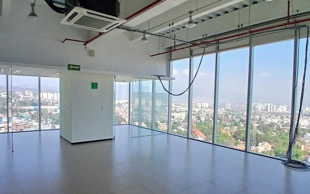
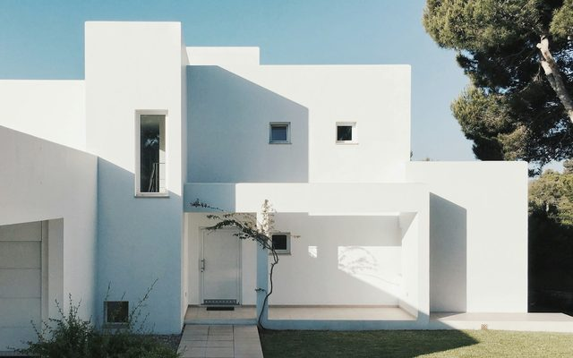
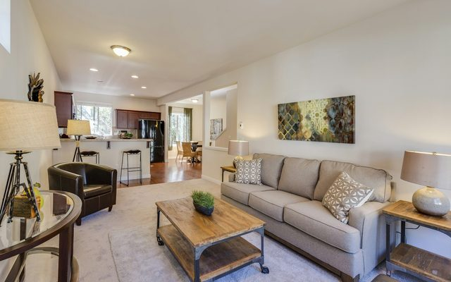
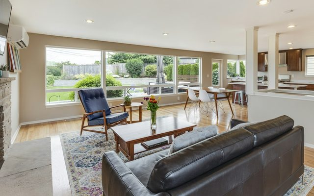

Blog y guías
Para decidir con información
Guías prácticas sobre comprar, rentar, vender e invertir en la Ciudad de México. Sin frases de folleto: números, procesos y lo que realmente conviene revisar.

La Evolución de la Colonia Roma: Un Punto de Encuentro entre Historia y Modernidad
La Colonia Roma en CDMX se transforma en epicentro cultural y gastronómico. Descubre su evolución y lo que ofrece para residentes e inversores.
Leer guía
Vivir en la Roma: Entre la Tradición y la Modernidad
La Roma ofrece una experiencia única para quienes buscan rentar en un barrio vibrante y con historia en CDMX.
Leer guía
Colonia Roma: Un viaje arquitectónico y cultural en CDMX
Explora la historia y el renacimiento de la Colonia Roma, un emblema cultural y arquitectónico en Ciudad de México.
Leer guía
Cómo administrar tu propiedad en renta sin complicaciones
Descubre cómo gestionar eficientemente tu inmueble en renta en CDMX, desde la autogestión hasta plataformas proptech.
Leer guía
Elegir el Crédito Hipotecario Ideal en 2026: Consejos Clave
Descubre cómo elegir el mejor crédito hipotecario en 2026 y proteger tu inversión en México.
Leer guía
La Doble Protección en Arrendamientos: Investigación de Inquilinos y Póliza Jurídica
Entiende por qué combinar la investigación de inquilinos y la póliza jurídica ofrece la máxima seguridad en arrendamientos en CDMX.
Leer guía
La Evolución del Mercado de Arrendamiento en la CDMX
Exploramos cómo el mercado de arrendamiento en la CDMX está cambiando y qué significa para inquilinos e inversionistas.
Leer guía
Vender para comprar: Cómo manejar el cambio de hogar en CDMX
Descubre los pasos esenciales para vender tu casa y adquirir una nueva en la CDMX, optimizando tu inversión.
Leer guía
Vender tu casa en CDMX: Estrategias para un proceso rápido y sin estrés
Descubre cómo vender tu casa rápidamente en un mercado competitivo con preparación, fotografía profesional, precios adecuados y asesoría experta.
Leer guía
Vender tu Propiedad en México en 2025: Claves para el Éxito
Descubre los pasos esenciales para vender tu inmueble en México en 2025 y maximizar tu retorno en un mercado en crecimiento.
Leer guía
Mantén tu departamento en renta ocupado: estrategias efectivas
Descubre cómo evitar que tu departamento en CDMX permanezca vacío y optimiza tu inversión con estrategias modernas.
Leer guía
Oficinas en Santa Fe: comprar o rentar y qué revisar antes de decidir
Comparo comprar y rentar una oficina en Santa Fe, explico qué significan Clase A+ y LEED Gold y dejo una lista para revisar antes de firmar. Con un ejemplo real.
Leer guía
Consejos Esenciales para Rentar en CDMX: Guía Práctica 2023
Explora los pasos clave para rentar en CDMX, desde contratos hasta precios por zona. Información vital para inquilinos y propietarios.
Leer guía
Cómo la infraestructura redefine el valor inmobiliario en CDMX
La infraestructura es clave para la plusvalía inmobiliaria y el crecimiento urbano en CDMX.
Leer guía
El mercado inmobiliario de CDMX en 2026: Oportunidades y desafíos
La oferta limitada y la apreciación de precios marcan el inicio de 2026 en el mercado residencial de CDMX, con oportunidades en ubicaciones emergentes.
Leer guía
Diferencias de precios en el mercado inmobiliario de la CDMX: una ciudad de contrastes
La Ciudad de México es la más cara para vivienda, pero las diferencias entre alcaldías son notables y afectan decisiones de compra e inversión.
Leer guía
El lujo inmobiliario en Santa Fe e Interlomas: ¿Una inversión rentable?
El mercado de lujo en Santa Fe e Interlomas crece, pero enfrenta retos en sus tiempos de venta. ¿Es este el momento para invertir?
Leer guía
El mercado inmobiliario en CDMX: ¿Qué nos depara el futuro?
Exploramos las tendencias actuales y futuras del mercado inmobiliario en CDMX, destacando zonas clave y estrategias para compradores e inversores.
Leer guía
La Arquitectura Contemporánea Mexicana: Un Legado de Innovación y Sustentabilidad
Explora cómo la arquitectura contemporánea mexicana redefine el diseño global con materiales locales y técnicas sustentables.
Leer guía
¿Por qué CDMX sigue liderando el mercado inmobiliario de México?
CDMX, Baja California Sur y Querétaro son las entidades con precios más elevados en vivienda; descubre las razones detrás de estas cifras.
Leer guía
Reforma: El corazón del lujo inmobiliario en la Ciudad de México
El corredor Reforma en CDMX se consolida como el epicentro de la vivienda de lujo, reflejando altos precios y una oferta verticalizada.
Leer guía
Tendencias Arquitectónicas en México: Innovación y Tradición en la Vivienda Contemporánea
Explora cómo la arquitectura contemporánea mexicana equilibra la tradición con la innovación para crear viviendas eficientes y seguras.
Leer guía
Cambios en la Ley Antilavado 2026: Impacto en el Mercado Inmobiliario
La nueva Ley Antilavado en México trae cambios que afectarán al sector inmobiliario; descubre cómo prepararte.
Leer guía
La Nueva Era del Mercado Inmobiliario Industrial en México
La creciente exportación de electrónicos impulsa la demanda de espacios industriales en México, redefiniendo el panorama inmobiliario.
Leer guía
Open House CDMX 2026: Un Vistazo a la Arquitectura del Futuro
Explora la arquitectura de CDMX en Open House 2026, un festival que redefine el diseño urbano para enfrentar desafíos contemporáneos.
Leer guía
La Jornada Notarial: Un impulso para la seguridad jurídica en CDMX
Descubre cómo la Jornada Notarial ofrece descuentos y asesoría gratuita para escrituración y sucesiones en la Ciudad de México.
Leer guía
Herencias y Donaciones en México: Lo que Necesitas Saber
Explora cómo las herencias y donaciones se manejan fiscalmente en México y qué debes considerar al recibir bienes familiares.
Leer guía
La Reconfiguración del Mercado Inmobiliario en CDMX: Oportunidades y Desafíos
El mercado inmobiliario en CDMX enfrenta contrastes: oportunidades en zonas emergentes y retos en inventario y plusvalía.
Leer guía
El mercado inmobiliario en CDMX: entre la inversión y la exclusión
El mercado inmobiliario en CDMX se mantiene activo, pero inaccesible para la mayoría. ¿Qué impulsa esta paradoja?
Leer guía
The Real Estate Show 2026: qué significan los $18,400 mdd de inversión de la ADI para quien compra o renta en CDMX
La ADI anunció una inversión de sus socios superior a los 18,400 millones de dólares, con más de 4,200 millones para la capital. Traduzco el titular a lo que realmente cambia para quien busca comprar, rentar o invertir en la Ciudad de México.
Leer guía
¿Cuánto cuesta vivir en Polanco en 2026?
El precio del departamento es solo una parte. Mantenimiento, predial, estacionamiento y estilo de vida cambian el número final más de lo que la gente espera.
Leer guíaRoma Norte vs Condesa: ¿dónde conviene vivir?
Son vecinas, comparten precio y se confunden todo el tiempo. Pero se viven distinto, y esa diferencia decide la compra.
Leer guía5 errores al comprar un departamento en CDMX
Los cinco que veo con más frecuencia, y que casi siempre se pueden evitar con una revisión de treinta minutos.
Leer guíaCómo calcular el precio por metro cuadrado (y por qué a veces engaña)
Es el indicador más usado del mercado inmobiliario y también el peor interpretado. Así se usa bien.
Leer guíaCrédito hipotecario en CDMX: lo que conviene saber antes de solicitarlo
Enganche, capacidad de pago, tasa fija y los cuatro documentos que deciden si te autorizan.
Leer guía
Dónde invertir para renta en CDMX: cuatro zonas con números
Rendimiento bruto, vacancia y perfil de inquilino en Roma Sur, Narvarte, Mixcoac y Escandón.
Leer guíaPor qué tu departamento no se vende (y casi nunca es la propiedad)
Las tres razones reales por las que una propiedad lleva ocho meses publicada en la Ciudad de México.
Leer guíaRentar en CDMX: requisitos, depósitos y qué revisar en el contrato
Aval, póliza jurídica, depósito e inventario. Lo que conviene tener listo antes de empezar a buscar.
Leer guía
Vivir en Del Valle: la colonia que casi siempre gana la comparación
Por qué tantos compradores terminan en Del Valle después de recorrer media ciudad.
Leer guíaTres cosas que están cambiando en el mercado inmobiliario de CDMX
Verticalización del centro-sur, el peso del home office en la búsqueda y la nueva competencia por el inventario de renta.
Leer guíaPor categoría
Todas las guías
Invertir
Créditos hipotecarios
Zonas de CDMX
Lifestyle
¿Tu caso no está en ninguna guía?
Escríbeme y lo resolvemos en una conversación. Suele ser más rápido que leer diez artículos.